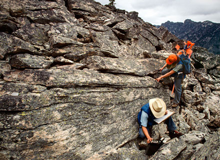
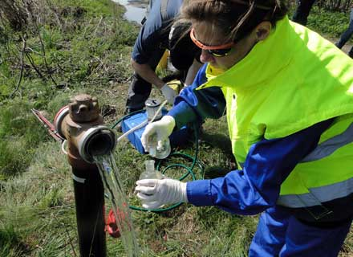
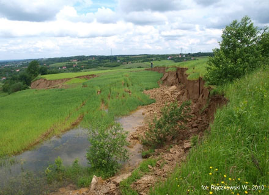
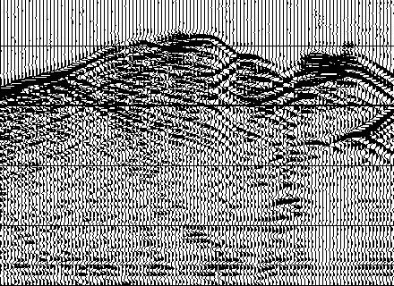

Central Geological Database
more and more available geology
-
CBDG
Central Geological Database is the largest Polish collection of digital geological data.
-
CBDG Portal
Spatial data from different fields of geology. Map Viewers, WMS services, SHP files available for download.
-
Free access
Common data from different fields of geology are avaiable free of charge.
-
CBDG
Central Geological Database is the largest Polish collection of digital geological data.
CBDG Portal
Spatial data from different fields of geology. Map Viewers, WMS services, SHP files available for download.
Free access
Common data from different fields of geology are avaiable free of charge.
Geological information
- Information on archival geological studies
- Boreholes for recognition of the geological structure
- Geological carthography
- Resources of mineral deposits
- Legal aspects in geology
Free metadata access

Geology

Hydrogeology
Hydrogeological data
- HYDRO Bank
- Grpundwater monitoring database
- Major groundwater reservoirs (GZWP)
- Hydrogeological map of Poland (MhP)
- Hydrogeological map of Poland - First water-bearing level (MhP PPW)
- Flooding risk areas
- Water consumption
- Disposable water resources
Free access
Environmental protection
- Environmental cartography
- Geochemical cartography
- Natural threats
- Anthropogenic threats
Free access

Environmental data
Engineering geology
- Subsoil research
- Laboratory tests of samples of soils and rocks
- Geological engineering cartography and valorisation
- Geoanalysis and modeling
Free access

Engineering geology data

Geophysics
Geophysical surveysmeasurement data
- Drilling geophysics
- Surface geophysical measurements
- gravimetry,
- magnetic,
- geoelectricity,
- magnetotellurics.
- Seismic
- Marine geophysical profiles
- Petrophysical measurements
Free access